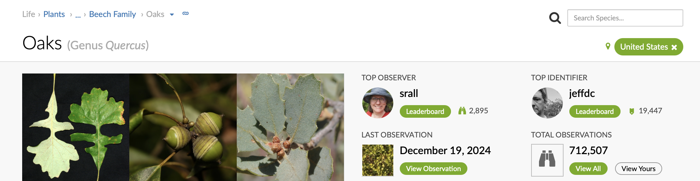
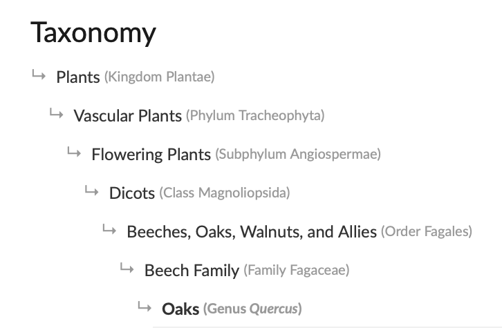

library(readr) # read and write tabular data
library(dplyr) # manipulate data
library(lubridate) # manipulate dates
library(here) # file pathsHigher taxa
Questions
- How do we search for observations for groups of related species?
Objectives
- Learn how search for higher taxa.
Load packages.
So far we looked at species. Instead of looking at specific species, we can also look for a group of related species.
Get iNaturalist data.
inat_data <- read_csv(here('data/cleaned/cnc-los-angeles-observations.csv'))Search for ‘oaks’
Let’s look for observations for all oak trees. We can use filter where the common_name is ‘oaks’.
oaks_obs <- inat_data %>%
filter(common_name == 'oaks')
dim(oaks_obs)[1] 218 37We have 218 observations. However, when we used the iNaturalist site to look for ‘oaks’ for ‘Los Angeles City Nature Challenge Cumulative Observations 2016-2024’, we get 1369 observations. What’s causing the difference?
When you search for ‘oaks’ on iNaturalist, click the ‘About’ link, and it will bring you to the taxa page for ‘oaks’.


‘Oaks’ is the common name for genus Quercus. When you search iNaturalist observations for ‘oaks’, iNaturalist returns observations that belong to the genus Quercus, which includes species such as ‘Live Coast Oak’ and ‘Valley Oak’.
Our query only looks for observation where common_name is ‘oaks’. This means we aren’t including oak species. To match the iNaturalist search results, we need to look for all observations where the genus equals Quercus including oak species.
We can use names() to get all the taxon name fields. There are several taxon__xxx__name fields.
names(inat_data) [1] "id" "observed_on"
[3] "time_observed_at" "user_id"
[5] "user_login" "user_name"
[7] "created_at" "updated_at"
[9] "quality_grade" "license"
[11] "url" "image_url"
[13] "sound_url" "tag_list"
[15] "description" "captive_cultivated"
[17] "latitude" "longitude"
[19] "positional_accuracy" "public_positional_accuracy"
[21] "geoprivacy" "taxon_geoprivacy"
[23] "coordinates_obscured" "scientific_name"
[25] "common_name" "iconic_taxon_name"
[27] "taxon_id" "taxon_kingdom_name"
[29] "taxon_phylum_name" "taxon_class_name"
[31] "taxon_order_name" "taxon_family_name"
[33] "taxon_genus_name" "taxon_species_name"
[35] "taxon_subspecies_name" "threatened"
[37] "establishment_means"
Note
When you download iNaturalist data, you can to select which taxon name fields to include in the download. By default, none are selected because the ‘Taxon extras’ fields slow down the export process.

We included the main taxon ranks names in the CNC observations csv.
The ‘Taxonomy’ tab on iNaturalist taxa pages show the taxonomic hierarchy with all the taxon ranks.

We can create a filter command to represent the taxonomic hierarchy.
oaks_obs_fixed <- inat_data %>%
filter(
taxon_kingdom_name == 'Plantae' &
taxon_phylum_name == 'Tracheophyta' &
taxon_class_name == 'Magnoliopsida' &
taxon_order_name == 'Fagales' &
taxon_family_name == 'Fagaceae' &
taxon_genus_name == 'Quercus'
)
dim(oaks_obs_fixed)[1] 1367 37The reason why iNaturalist has 1369 observations but we have 1367 is because iNaturalist has two ‘Quercus’ observations which don’t have latitude and longitude data. Our cleaned iNaturalist data excludes observations without latitude and longitude.
Let’s see the unique common names.
unique(oaks_obs_fixed$common_name) [1] "coast live oak" "Engelmann oak"
[3] "cork oak" "California scrub oak"
[5] "oaks" "canyon live oak"
[7] "island oak" "interior live oak"
[9] "valley oak" "Holm oak"
[11] "white oaks" "northern red oak"
[13] "island scrub oak" "high-latitude oaks"
[15] "southern live oak" "Tucker's Oak"
[17] "California black oak" "MacDonald Oak"
[19] "blue oak" NA
[21] "leather oak" "Southern live oaks"
[23] "North America intermediate oaks" "ring-cupped oak"
[25] "red oaks" "San Gabriel oak"
[27] "California Live Oak" "Ewan's Oak"
[29] "Interior live oak" "Nuttall's scrub oak" We get a combination of oaks species and oaks genus.
The reason why I listed the hierarchy instead of just filtering by taxon_genus_name == 'Quercus' is because of limitations of my taxonomy knowledge and the limitations of the information provided by the CSV. Some Latin words are used multiple times to represent different taxa. For instance Eisenia is a genus for a type of worm and a genus for a type kelp. A filter command for taxon_genus_name == 'Eisenia' would return observations for two very different organisms.
Eisenia_obs <- inat_data %>%
filter(taxon_genus_name == 'Eisenia') %>%
select(common_name, taxon_kingdom_name)
Eisenia_obs# A tibble: 7 × 2
common_name taxon_kingdom_name
<chr> <chr>
1 Redworm Animalia
2 Southern sea palm Chromista
3 Redworm Animalia
4 Redworm Animalia
5 Redworm Animalia
6 Southern sea palm Chromista
7 Southern sea palm Chromista
Note
iNaturalist gives each taxa name a unique id. Worm Eisenia is 128842, kelp Eisenia is 125880. When iNaturalist searches for observations for a given taxa, it uses the unique id for the search to avoid the problem of duplicate scientific names. Unfortunately the CSV download does not provide ids for each taxon rank, so we can’t do a search by taxon rank id. It is possible to get the ids for all the taxon ranks, but that involves more advance coding techniques.
I don’t have enough expertise to know if a taxa name is unique, so to play it safe, I list the entire taxonomy hierarchy. Someone with more expertise might know there is only one Quercus in Plantae so they search for Plantae kingdom and genus Quercus.
Plantae_Quercus_obs <- inat_data %>%
filter(taxon_kingdom_name == 'Plantae' &
taxon_genus_name == 'Quercus') %>%
select(common_name, taxon_kingdom_name)
dim(Plantae_Quercus_obs)[1] 1367 2Search for ‘trees’
Another example, let’s search for ‘trees’. When we search iNaturalist for ‘trees’, the first result is Phylum Tracheophyta. Let’s look at our data using taxon_phylum_name and ‘Tracheophyta’
trees_obs <- inat_data %>%
filter(taxon_kingdom_name == 'Plantae' &
taxon_phylum_name == 'Tracheophyta')
dim(trees_obs)[1] 95372 37There are 95372 Tracheophyta observations.
unique(trees_obs$common_name)[0:30] [1] "tree houseleeks" "London Plane"
[3] "Christmas-cheer" "Creeping Woodsorrel"
[5] "century plants" "Fortnight Lilies"
[7] "Climbing fig" "Fan Palms"
[9] "Common Cotula" "Cedars"
[11] "scarlet pimpernel" "Rancher's fiddleneck"
[13] "Showy Penstemon" "redbuds"
[15] "flax-lilies" "Wand Mullein"
[17] "California Centaury" "crimson clover"
[19] "tropical milkweed" "giant reed"
[21] "castor bean" "Chilicothe"
[23] "roses" "Small-flowered Catchfly"
[25] "goldentop grass" "Smooth Cat's Ear"
[27] "purple nightshade" "Bladder-senna"
[29] "Pacific pea" "California cudweed" We are getting plants such as lilies, penstemon, and milkweed which aren’t trees. Why is that?
If we look up ‘Tracheophyta’ in Wikipedia:
The group includes most land plants (c. 300,000 accepted known species) other than mosses.
If we look up ‘tree’ in Wikipedia:
Trees are not a monophyletic taxonomic group but consist of a wide variety of plant species that have independently evolved a trunk and branches as a way to tower above other plants to compete for sunlight. The majority of tree species are angiosperms or hardwoods; of the rest, many are gymnosperms or softwoods.
Although “tree” is a common word, there is no universally recognized precise definition of what a tree is, either botanically or in common language.
In other words, there is no one word we can use to find all trees. The fact that iNaturalist shows Tracheophyta as the first search result for ‘trees’ is a little quirk with the iNaturalist search algorithm. To find all trees, we would need to get a list of trees names, and create a filter command with all the tree names.
A quick internet search came up with LA County recommended trees and Wikipedia list of trees and shrubs. You can use lists like these as the basis of creating a list of trees. Your search might look something like this.
Search by species.
laco_species <- c('Acacia aneura', 'Acacia stenophylla', 'Afrocarpus falcatus', "Agonis flexuosa", 'Angophora costata', "Arbutus 'marina'", 'Arbutus unedo' )
laco_species_obs <- inat_data %>%
filter(taxon_species_name %in% laco_species &
taxon_kingdom_name == 'Plantae') %>%
select(user_login, common_name, scientific_name, taxon_species_name)Search by genera.
laco_genera <- c('Acacia', 'Afrocarpus', "Agonis", 'Angophora', "Arbutus" )
laco_genera_obs <- inat_data %>%
filter(taxon_genus_name %in% laco_genera &
taxon_kingdom_name == 'Plantae') %>%
select(user_login, common_name, scientific_name, taxon_genus_name)When looking for higher taxanomy, it might take some additional research, and trial and error to get the results you want.
Common names vs scientific names
When searching for species, it’s generally better to search by scientific names rather than common names. A species usually only has one scientific name. A species can have zero to many common names in many languages, and different sources can use different common names. For example iNaturalist uses ‘strawberry tree’ and LA County tree list uses ‘strawberry madrone’ for Arbutus unedo.
16 observations for Arbutus unedo.
inat_data %>%
filter(scientific_name == 'Arbutus unedo') %>%
select(scientific_name, common_name)# A tibble: 16 × 2
scientific_name common_name
<chr> <chr>
1 Arbutus unedo strawberry tree
2 Arbutus unedo strawberry tree
3 Arbutus unedo strawberry tree
4 Arbutus unedo strawberry tree
5 Arbutus unedo strawberry tree
6 Arbutus unedo strawberry tree
7 Arbutus unedo strawberry tree
8 Arbutus unedo strawberry tree
9 Arbutus unedo strawberry tree
10 Arbutus unedo strawberry tree
11 Arbutus unedo strawberry tree
12 Arbutus unedo strawberry tree
13 Arbutus unedo strawberry tree
14 Arbutus unedo strawberry tree
15 Arbutus unedo strawberry tree
16 Arbutus unedo strawberry tree16 observations for ‘strawberry tree’
inat_data %>%
filter(common_name == 'strawberry tree') %>%
select(scientific_name, common_name)# A tibble: 16 × 2
scientific_name common_name
<chr> <chr>
1 Arbutus unedo strawberry tree
2 Arbutus unedo strawberry tree
3 Arbutus unedo strawberry tree
4 Arbutus unedo strawberry tree
5 Arbutus unedo strawberry tree
6 Arbutus unedo strawberry tree
7 Arbutus unedo strawberry tree
8 Arbutus unedo strawberry tree
9 Arbutus unedo strawberry tree
10 Arbutus unedo strawberry tree
11 Arbutus unedo strawberry tree
12 Arbutus unedo strawberry tree
13 Arbutus unedo strawberry tree
14 Arbutus unedo strawberry tree
15 Arbutus unedo strawberry tree
16 Arbutus unedo strawberry tree0 observations for ‘strawberry madrone’. Even though ‘strawberry madrone’ is a valid common name for Arbutus unedo, we get zero results because it isn’t the common name that iNaturalist uses.
inat_data %>%
filter(common_name == 'strawberry madrone') %>%
select(scientific_name, common_name)# A tibble: 0 × 2
# ℹ 2 variables: scientific_name <chr>, common_name <chr>The downside of searching by scientific names is trying to spell and say all these Latin words.
scientific_name vs taxon_xxx_name
When searching by scientific name, it is generally better to search using taxon_xxx_name instead of scientific_name because taxon_xxx_name returns the lower taxa.
‘Sceloporus occidentalis’ is the scientific name for ‘Western Fence Lizard’.
lizard1 <- inat_data %>%
filter(scientific_name == 'Sceloporus occidentalis')
dim(lizard1)[1] 3339 37lizard2 <- inat_data %>%
filter(taxon_species_name == 'Sceloporus occidentalis')
dim(lizard2)[1] 3595 37We get 3339 records for scientific_name, and 3595 records for taxon_species_name. The reason why taxon_species_name returns more results is because taxon_species_name returns results for subspecies. We can look at the scientific_name for taxon_species_name == 'Sceloporus occidentalis'
table(lizard2$scientific_name)
Sceloporus occidentalis Sceloporus occidentalis longipes
3339 256 We get both species ‘Sceloporus occidentalis’ and subspecies ‘Sceloporus occidentalis longipes’.